Comment en jouer
Une promenade sur l'écran, carte par carte. Chaque partie a une image de l'app en jeu, ce qu'elle fait et ce que fait chaque commande. Les textes sont ceux de LEARN, dans l'app.
L'écran

Au centre, la sphère d'eau avec les cinq organismes ; autour, les cartes, numérotées de 01 à 11 ; en bas, la bande du désir ; en haut, l'en-tête.
La première commande de chaque carte est sa porte : la part de ce module dans le mélange. À zéro, le module est éteint et les autres commandes sont grisées. Montez d'abord la porte, puis touchez les autres. Tout est lent à dessein : accordez une minute à chaque geste.
ÉCOSYSTÈME
L'aquarium, le réseau et la musique
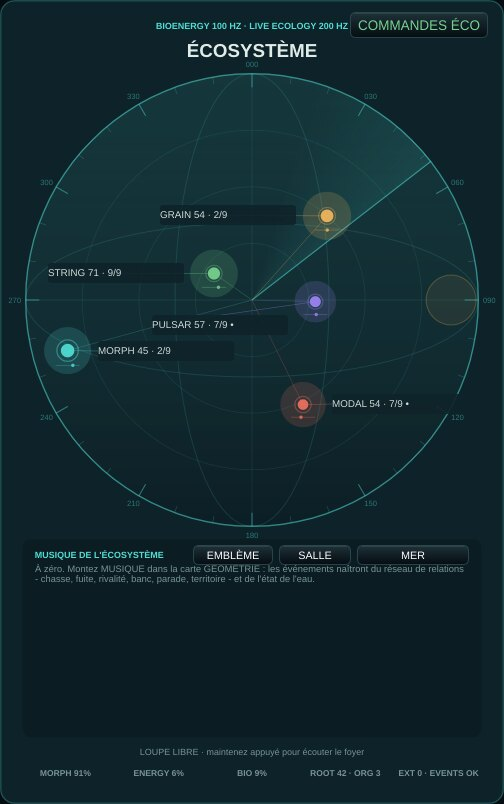
Cinq organismes vivent dans une sphère d'eau : ils voient, entendent, chassent, fuient, paradent et défendent un territoire. Les lignes colorées sont le réseau de relations ; le panneau du bas montre l'état de l'eau, la tension, la tonalité et les derniers événements. Maintenez appuyé sur la sphère pour déplacer la loupe et écouter de près.
Essayez : Regardez une ligne corail (une chasse) s'épaissir, puis écoutez le buzz terminal et la capture ; ensuite, une cadence.
| COHÉSION | À quel point le banc nage et chante ensemble. |
|---|---|
| DANGER | Peur dans l'eau : accents plus forts, plus d'ornements, plus de fuites. |
| FOCUS ÉPARS | Mode d'écoute : peu d'événements, focalisés. |
| MÉMOIRE D'ÉNERGIE | Mode d'écoute : l'énergie mémorisée et relâchée lentement. |
| CYCLE GÉOMÉTRIQUE | Mode d'écoute : les cycles des orbites mènent. |
| DÉRIVE COLLECTIVE | Mode d'écoute : le groupe dérive ensemble. |
ÉCOLOGIE
Désir et géométrie
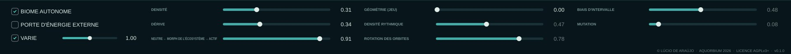
La bande du bas réunit le désir de l'écosystème (densité, dérive, morph) et le séquenceur géométrique des orbites. Le désir change des tendances, il n'écrit jamais d'événements.
Essayez : COMMANDES ÉCO (dans l'aquarium) ouvre cohésion, danger, les modes d'écoute et les scènes.
| DENSITÉ | Combien de choses se passent : le désir de densité de l'écosystème. |
|---|---|
| DÉRIVE | Agitation : à gauche eau calme, à droite agitée. |
| NEUTRE ← MORPH DE L'ÉCOSYSTÈME → ACTIF | D'un mélange neutre à l'influence spatiale et timbrale pleine de l'écosystème. |
| GÉOMÉTRIE (JEU) | Zéro : géométrie autonome. Montez pour activer rythme, rotation, intervalles et mutation ; les changements apparaissent aux prochains événements. |
| DENSITÉ RYTHMIQUE | Combien de pas de chaque orbite sonnent. |
| ROTATION DES ORBITES | Fait tourner le début du motif de chaque orbite. |
| BIAIS D'INTERVALLE | Penche les pas mélodiques vers des intervalles plus petits ou plus larges. |
| MUTATION | À quelle fréquence les orbites changent de forme. |
| BIOME AUTONOME | Le biome vit et sonne seul ; désactivez pour le jouer seulement de l'extérieur. |
| PORTE D'ÉNERGIE EXTERNE | Les notes externes (MIDI, clavier) ouvrent l'énergie du biome. |
| VARIE | VARIE : les commandes bougent toutes seules au fil de la musique, lentement et en relation, autour de là où la graine ou votre main les a laissées - plus chaudes et rapides au climax de la pièce, apaisées au repos. L'étage de sortie ne bouge jamais. Touchez une commande et elle respire autour de votre valeur. Éteint : tout reste en place. Chaque ouverture propose aussi un autre biome - eau, lumière, population, corps, quels modules s'éveillent ; l'état que vous avez laissé est gardé comme opening.previousStateV1 dans les préférences. |
CERVEAU
Incertitude et état
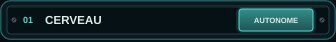
La bio-énergie et les décisions internes du biome : il n'a besoin d'aucune note externe pour vivre. Son état nourrit toutes les autres cartes.
Essayez : Laissez le biome seul quelques minutes et écoutez comment il traverse le jour et la saison.
| HORLOGE | CERVEAU : à quelle fréquence le registre du Cerveau tourne (0,06 à 0,9 Hz). Centre = comme avant. |
|---|---|
| COORDINATION | CERVEAU : combien les organismes partagent une inclinaison - à 0 chacun la sienne, à 1 un banc. Zéro = comme avant. |
GÉOMÉTRIE
Forme, structure et musique écologique
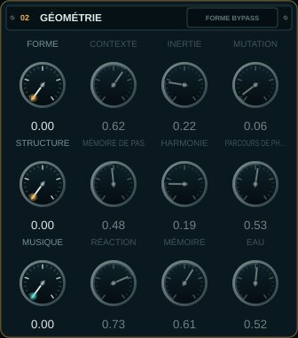
Trois couches de composition : FORME (une mémoire de Markov des sections), STRUCTURE (mémoire de pas et harmonie) et la MUSIQUE de l'écosystème, où les événements naissent du réseau de relations entre les organismes et de l'état de l'eau.
Essayez : Montez MUSIQUE à 1, puis déplacez EAU lentement vers la gauche : écoutez la musique se figer en cristal ; puis vers la droite, jusqu'à la turbulence et l'ébullition.
| FORME | Zéro : mémoire formelle transparente. Montez pour déplacer section et contour aux prochains événements collectifs. |
|---|---|
| CONTEXTE | Combien l'état écologique attire la prochaine région formelle. |
| INERTIE | Tendance à rester dans la région formelle actuelle. |
| MUTATION | Probabilité distribuée de sauts entre régions formelles. |
| STRUCTURE | Zéro : chemin précédent intact. Montez pour activer la mémoire de pas et la progression. |
| MÉMOIRE DE PAS | Contribution de la mémoire adressable à la hauteur et à la durée des événements. |
| HARMONIE | Contribution des accords pondérés au champ des hauteurs. |
| PARCOURS DE PHASE | Parcours écologique : le jour à gauche, la saison à droite. |
| MUSIQUE | Zéro : route précédente intacte. Montez pour que la musique vienne de l'écosystème : chasse, fuite, parade, territoire, le réseau de relations. |
| RÉACTION | La force avec laquelle les organismes réagissent à ce qu'ils voient et entendent à travers l'eau. |
| MÉMOIRE | Gauche : les chants se répètent (identité). Droite : ils se transforment et se copient entre alliés. |
| EAU | Centre : l'eau suit la saison. À gauche elle refroidit vers la glace ; à droite elle chauffe vers l'ébullition. Le changement d'état prend le temps de la chaleur latente. |
TIMBRE
Les corps des organismes
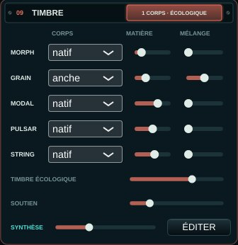
Chaque organisme peut chanter avec un second corps - voix, matière, souffle, corde, goutte, pli, membrane, verre, chœur, archet ou anche - mêlé à son corps natif. Le TIMBRE ÉCOLOGIQUE laisse l'eau, la chasse, la fuite, la parade, la vigueur et la santé les transformer. En bas, SYNTHÈSE et ÉDITER ouvrent le dispositif de synthèse : une voix par organisme que vous construisez, jouée par l'écosystème.
Essayez : Donnez la voix au MORPH et la goutte au PULSAR, montez leur MÉLANGE, puis le TIMBRE ÉCOLOGIQUE : quand le chasseur poursuit, sa voix s'aiguise ; quand l'eau bout, les gouttes s'épaississent.
| CORPS | Le second corps de cet organisme : voix (chant formantique), matière (modes harmoniques → membrane), souffle, corde, goutte d'eau, pli, membrane (tambour d'eau → peau), verre frotté, chœur, archet (corde frottée) ou anche (le tube d'une clarinette). |
|---|---|
| MATIÈRE | MATIÈRE : le caractère à l'intérieur du corps (les voyelles de la voix et du chœur ; harmonique → membrane ; l'air du souffle ; pincée → frottée ; gouttes → pluie ; le pli ; tambour lâche → peau tendue ; l'éclat et le battement du verre ; l'archet de sul tasto à sul ponticello ; l'embouchure de l'anche, sombre à brillante). |
| MÉLANGE | MÉLANGE : quelle part du second corps sonne avec le corps natif. |
| TIMBRE ÉCOLOGIQUE | TIMBRE ÉCOLOGIQUE : combien la vie de l'écosystème transforme la matière et la présence des corps (eau, chasse, fuite, parade, vigueur, santé). |
| SOUTIEN | SOUTIEN : le niveau des trois organismes de soutien - GRAIN, MODAL, STRING - face à MORPH et PULSAR, de -6 à +24 dB. Ils sont environ 22-26 dB sous le premier plan ; montez pour les amener devant. 0 dB au départ. |
Le dispositif de synthèse
Une voix que vous construisez, pour chaque organisme
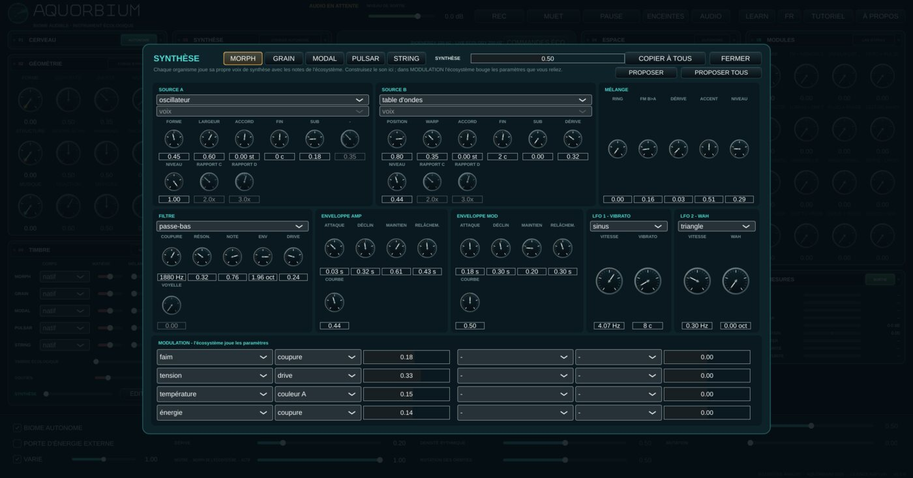
TIMBRE → ÉDITER ouvre un synthétiseur par organisme : deux sources (oscillateur, bruit, FM, table d'ondes, additive, pulsar, corde, matière, chaos, rétroaction ou l'un des corps), RING et FM entre elles, un filtre, deux enveloppes et deux LFO. L'écosystème joue les notes ; dans MODULATION, la vie du biome - la faim, la tension, la distance, la température de l'eau - bouge les paramètres que vous reliez.
Essayez : PROPOSER TOUS, et SYNTHÈSE à moitié ; puis changez une voie à la fois et écoutez ce que l'écosystème en fait. Le tutoriel a cinq leçons sur le dispositif.
| PROPOSER | PROPOSER : un patch de départ pour cet organisme, tiré de son espèce (sources, geste, registre) et de sa stratégie écologique (ce qui atteint la matrice), et nivelé avec les autres. Chaque clic en tire un autre ; le premier d'une session suit sa graine. Éditez à partir de là. |
|---|---|
| MÉLANGE | SYNTHÈSE : quelle part de la voix de synthèse de chaque organisme sonne à la place de son propre corps. À zéro l'instrument sonne exactement comme avant. |
SYNTHÈSE
Voix organiques
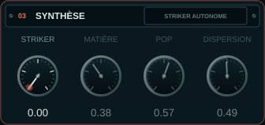
Le Striker granulaire : des impacts faits de particules, de la poussière au métal résonant.
Essayez : Montez STRIKER, puis bougez MATIÈRE et DISPERSION pendant que le biome joue.
| STRIKER | Zéro : Striker autonome. Montez pour activer MATIÈRE, POP et DISPERSION ; ils répondent aux prochains impacts. |
|---|---|
| MATIÈRE | De la poussière brève au métal résonant. |
| POP | Nombre de particules par impact. |
| DISPERSION | Dispersion temporelle et spectrale. |
ESPACE
Perspective et mémoire
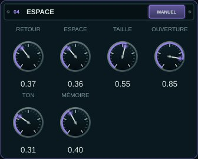
L'espace partagé où les sons des organismes se réfléchissent : des premières réflexions dont la taille, l'ouverture et le ton suivent l'aquarium.
Essayez : Montez ESPACE et TAILLE pour une grande salle d'eau ; baissez TON pour un espace plus profond et sombre.
| RETOUR | Quantité audible de l'espace partagé. |
|---|---|
| ESPACE | Zéro : Espace autonome. Montez pour activer TAILLE, OUVERTURE, TON et MÉMOIRE. RETOUR fonctionne indépendamment. |
| TAILLE | Échelle temporelle des réflexions. |
| OUVERTURE | Ouverture latérale des réflexions. |
| TON | Ouverture spectrale des réflexions. |
| MÉMOIRE | Persistance du champ de réflexions. |
ENVIRONNEMENT
Signature et lit
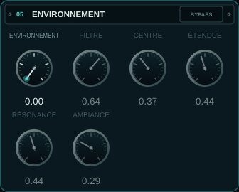
Une signature spectrale à huit bandes du biome et un lit de bruit guidé par la saison, l'eau et l'intégrité du verre.
Essayez : Montez un peu ENVIRONNEMENT et AMBIANCE : l'aquarium gagne son propre air.
| ENVIRONNEMENT | Zéro : bypass transparent. Montez pour activer filtre et atmosphère. |
|---|---|
| FILTRE | Mélange sec de la signature spectrale à huit bandes. |
| CENTRE | Centre logarithmique du banc spectral. |
| ÉTENDUE | Étendue en octaves des huit bandes. |
| RÉSONANCE | Sélectivité des bandes spectrales. |
| AMBIANCE | Lit de bruit guidé par la saison, l'eau et l'intégrité. |
QUEUE
Persistance synthétique
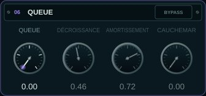
Une réverbération tardive et diffuse après les premières réflexions.
Essayez : Avec CAUCHEMAR la queue se tord sur elle-même : à utiliser avec parcimonie, comme un événement.
| QUEUE | Zéro : bypass transparent. Montez pour entendre la queue tardive. |
|---|---|
| DÉCROISSANCE | Durée de la persistance synthétique. |
| AMORTISSEMENT | Absorption progressive des hautes fréquences. |
| CAUCHEMAR | Torsion de la matrice de rétroaction. |
MASTER
Sortie et intégrité
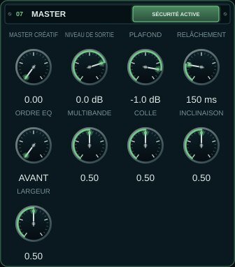
Le niveau final, le limiteur de sécurité et un master créatif optionnel (dynamique multibande, largeur, colle).
Essayez : NIVEAU DE SORTIE est le volume. MUET et PAUSE sont dans l'en-tête.
| MASTER CRÉATIF | Macro de crossover, dynamique multibande, largeur et colle optique. Zéro est un bypass exact. |
|---|---|
| NIVEAU DE SORTIE | Niveau technique final : -18 dB à +6 dB ; 0,75 vaut 0 dB. |
| PLAFOND | Plafond du limiteur : -6 dB à -0,1 dB ; initial -1 dB. |
| RELÂCHEMENT | Relâchement du limiteur : 50 ms à 500 ms ; initial 150 ms. |
| ORDRE EQ | Où se place l'égaliseur d'inclinaison du MASTER CRÉATIF : AVANT la dynamique multibande (elle réagit au son déjà incliné) ou APRÈS (l'inclinaison colore ce que la dynamique a laissé). N'agit qu'avec le MASTER CRÉATIF au-dessus de zéro. |
| MULTIBANDE | MASTER CRÉATIF : la dynamique multibande, moins ou plus que l'écologie. Centre = l'écologie seule. |
| COLLE | MASTER CRÉATIF : la colle lente, moins ou plus. Centre = l'écologie seule. |
| INCLINAISON | MASTER CRÉATIF : plus sombre (gauche) ou plus clair (droite) que la lumière du jour. Centre = l'écologie seule. |
| LARGEUR | MASTER CRÉATIF : plus étroit ou plus large que la cohésion (le grave reste mono). Centre = l'écologie seule. |
MODULES
Banc intégré
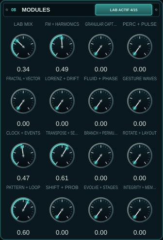
Tous les prototypes codés, réunis en quinze familles jouables : un laboratoire. LAB MIX à zéro garde l'instrument exactement tel quel.
Essayez : Montez LAB MIX, puis une famille à la fois, en écoutant ce que chacune ajoute.
| LAB MIX | Bypass maître du banc : zéro conserve exactement l'instrument précédent |
|---|---|
| FM + HARMONICS | FM, harmoniques, BiomaBass, banc, vocodeur et contagion |
| GRANULAR CAPTURE | Granulaire, isolateur, resynthèse récente et focus lock-in |
| PERC + PULSE | Percussion, masque stochastique et HarmonicRippleVoice |
| FRACTAL + VECTOR | Fractale, vecteur, polygone X/Y et FrequencyShifter |
| LORENZ + DRIFT | Lorenz, dérives et auto-rétroaction bornée |
| FLUID + PHASE | Mouvement, quadrature, inertie et binaural léger |
| GESTURE WAVES | MotionGestureRecorder et banc d'ondes de mouvement |
| CLOCK + EVENTS | Horloge, événements, résonateurs et L-system |
| TRANSPOSE + SELECT | AccumulatingTransposer et ThresholdStepSelector |
| BRANCH + PERMUTE | Ramification, seuils réactifs, matrice et Spotlight |
| ROTATE + LAYOUT | Rotation, disposition et pools partagés/reconfigurables |
| PATTERN + LOOP | Banques, RandomToLoop et automate cellulaire |
| SHIFT + PROB | ShiftRegisterMemory et ProbabilityDistribution |
| EVOLVE + STAGES | Évolution, rétroaction croisée, seuils et scènes comportementales |
| INTEGRITY + MEMORY | Intégrité, mémoire, faim et bus sans entrée |
Loupe
La loupe sur la vitre
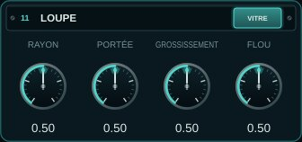
Maintenez appuyé sur la sphère pour poser la loupe contre la vitre et écouter de près les êtres qui passent là ; le reste devient flou. Les quatre boutons donnent la forme de la loupe.
Essayez : Suivez un organisme avec la loupe pendant qu'il traverse la sphère.
| RAYON | LOUPE : la taille du point net sur la vitre. Centre = comme avant. |
|---|---|
| PORTÉE | LOUPE : jusqu'où dans l'eau la loupe porte depuis la vitre. Centre = comme avant. |
| GROSSISSEMENT | LOUPE : combien les organismes nets passent devant. Centre = comme avant. |
| FLOU | LOUPE : combien les organismes flous reculent. Centre = comme avant. |
Mesures
La sortie, mesurée
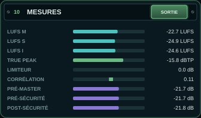
Le loudness (LUFS momentané, court terme et intégré), le true peak, la réduction du limiteur de sécurité, la corrélation stéréo et les trois prises que l'écosystème peut écouter : avant le MASTER CRÉATIF, avant le limiteur et après lui.
L'en-tête
Enregistrer, couper, écouter et apprendre
Le volume de sortie, REC, MUET et PAUSE, ENCEINTES ou CASQUE, le choix de l'AUDIO, LEARN, la langue, le TUTORIEL et À PROPOS. La ligne d'état montre le monde de la session et sa graine.
Essayez : Activez LEARN et passez la souris sur n'importe quelle commande.
| REC | Enregistre ce que vous entendez (après MASTER et MUET) en WAV flottant 32 bits dans Musique/Aquorbium/<date>/, avec un texte à côté : la graine de la session et les commandes. Jusqu'à une heure. |
|---|---|
| MUET | Coupe le son avec une rampe courte ; l'écosystème continue de vivre. |
| PAUSE | Coupe le son et fige le temps de l'écosystème ; REPRENDRE continue où il s'est arrêté. |
| ENCEINTES / CASQUE | ENCEINTES : le mélange stéréo. CASQUE : chaque organisme entendu d'où il est dans la sphère - gauche et droite, devant et derrière, en haut et en bas - à travers une tête (le modèle binaural de Brown & Duda : l'ombre de la tête, le délai entre les oreilles, le pavillon). À utiliser seulement au casque. |
| AUDIO | Choisir sortie, fréquence et tampon. Pour diagnostiquer des clics, essayez 48 kHz / 512 échantillons. |
| LEARN | LEARN actif : pointez une commande ou une carte et son explication apparaît en bas |
| TUTORIEL | Une visite guidée de l'instrument, chapitre par chapitre |
| À PROPOS | Ce qu'est l'Aquorbium, ses concepts, crédits et licence |